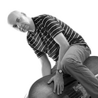
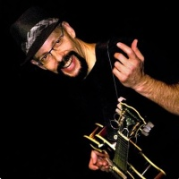
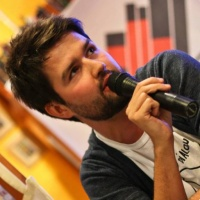

Jaromír Honzák
jazzový kontrabasista / skladatel
Za léta svého působení na jazzového scéně jsem pochopil, že existence jazzového managera, tedy
osoby, která Vám a Vaší kapele sežene hraní, je velmi vzácným úkazem. O to překvapivější bylo mé
setkání s Magdalénou Samkovou, která během krátké doby zařídila šest koncertů pro český projekt
amerického kytaristy Roryho Stuarta, jehož jsem členem. Zároveň začala pracovat i pro můj kvartet.
Magdaléna se rychle zorientovala v možnostech, jaké se jazzovým skupinám v České republice nabízejí.
Naše spolupráce je vždy na vysoké profesionální úrovni a vyznačuje se zároveň efektivní a příjemnou
komunikací.
jaromirhonzak.com

Rory Stuart
jazz guitarist / composer
Magdalena Samkova booked me on a Czech tour in December 2013-January 2014 and she did an amazing
job. I can not speak highly enough about how organized and thorough she was in every detail. She
booked us into 6 jazz venues in 5 Czech cities, arranged to have a beautiful website created devoted
to the tour, promoted it in several ways including through social media (we had great crowds at
every venue), and made sure that everything went smoothly. It was great to work with someone who,
although young and relatively new to the field, did everything in such a thoroughly professional
way. But, on top of that, it is FUN to work with Maggie - her enthusiasm, positive energy, and sense
of humor make every interaction with her a pleasure.

Jan Delong
Literární večery
Magdalenu Samkovou znám několik let a vždy mě na ní něco příjemně udivovalo, avšak do doby než
nastoupila na obor Hudební management na brněnské Janáčkově akademii múzických umění, jsem nebyl
schopen identifikovat, o co přesně se jedná.
Až ve chvíli, kdy jí její alma mater dala prostor a příležitost získat znalosti a zkušenosti v
oboru, který jí naplňuje, mi to všechno začalo docházet. Magdalena, kterou nikdo v jejím blízkém a
vzdáleném okolí nenazve jinak než Megi, je cílevědomá, iniciativní, energická, odhodlaná... mohl
bych pokračovat ve výčtu vlastností, kterými nenápadná holka z Třince oplývá, jenže je to nutné?
Stačilo by, podívat se na projekty, na kterých se podílela, které podpořila nebo ty, které díky ní
vznikly a kterých je autorkou.
Zmíním alespoň jeden, u něhož jsem mohl být také. Na přelomu roku 2012 a 2013 za mnou Megi přišla s
nápadem pořádat v Třinci jazzové koncerty v baru Destiny. A nebyl to jeden z těch planých výkřiků
momentálního nadšení, kterými se lidé opájí, chvástají a pak „skutek utek“.
Ne, Megi byla odhodlaná, měla vizi, smysluplnou koncepci a odhodlání. Proto uspěla u grantové a
kulturní komise města Třince a získala pro svůj malý projekt velmi solidní finanční podporu. Destiny
Jazz Nights tak měly zelenou stát se rovnocenným partnerem Literárních večerů v Třinci. Díky této
spolupráci se podařilo čtyři sobotní večery v Třinci proměnit na pozoruhodné kulturní zážitky.
Několikrát se mi stalo, že za mnou chodili spokojení návštěvníci a gratulovali ke skvělému večeru.
Tyto gratulace nepatřily jen mě, ale z velké části právě Magdaleně Samkové.
A nejen já, ale celá Městská knihovna v Třinci věří a doufá, že to nebyla naše poslední spolupráce.